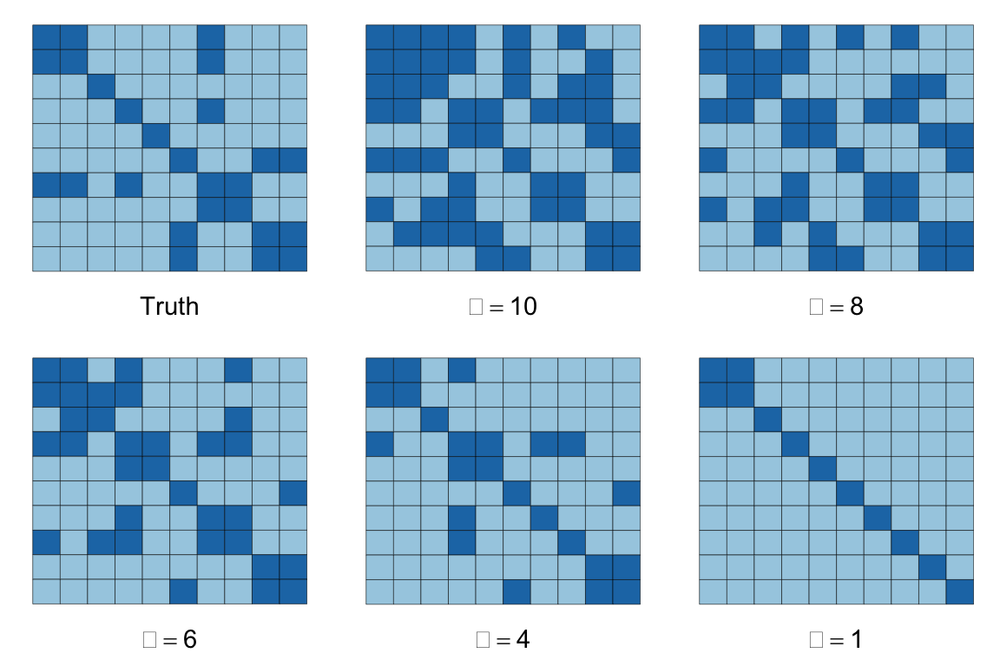

Sparse Inverse Covariance Estimation
Introduction
Assume we are given i.i.d. observations \(x_i \sim N(0,\Sigma)\) for \(i = 1,\ldots,m\), and the covariance matrix \(\Sigma \in {\mathbf S}_+^n\), the set of symmetric positive semidefinite matrices, has a sparse inverse \(S = \Sigma^{-1}\). Let \(Q = \frac{1}{m-1}\sum_{i=1}^m (x_i - \bar x)(x_i - \bar x)^T\) be our sample covariance. One way to estimate \(\Sigma\) is to maximize the log-likelihood with the prior knowledge that \(S\) is sparse (Friedman, Hastie, and Tibshirani 2008), which amounts to the optimization problem:
\[ \begin{array}{ll} \underset{S}{\mbox{maximize}} & \log\det(S) - \mbox{tr}(SQ) \\ \mbox{subject to} & S \in {\mathbf S}_+^n, \quad \sum_{i=1}^n \sum_{j=1}^n |S_{ij}| \leq \alpha. \end{array} \]
The parameter \(\alpha \geq 0\) controls the degree of sparsity. The problem is convex, so we can solve it using CVXR.
Example
We’ll create a sparse positive semi-definite matrix \(S\) using synthetic data
suppressWarnings(suppressMessages(library(CVXR)))
suppressWarnings(suppressMessages(library(Matrix)))
suppressWarnings(suppressMessages(library(expm)))
set.seed(1)
n <- 10 ## Dimension of matrix
m <- 1000 ## Number of samples
## Create sparse, symmetric PSD matrix S
A <- rsparsematrix(n, n, 0.15, rand.x = stats::rnorm)
Strue <- A %*% t(A) + 0.05 * diag(rep(1, n)) ## Force matrix to be strictly positive definiteWe can now create the covariance matrix \(R\) as the inverse of \(S\).
R <- base::solve(Strue)As test data, we sample from a multivariate normal with the fact that if \(Y \sim N(0, I)\), then \(R^{1/2}Y \sim N(0, R)\) since \(R\) is symmetric.
x_sample <- matrix(stats::rnorm(n * m), nrow = m, ncol = n) %*% t(expm::sqrtm(R))
Q <- cov(x_sample) ## Sample covariance matrixFinally, we solve our convex program for a set of \(\alpha\) values.
suppressMessages(suppressWarnings(library(CVXR)))
alphas <- c(10, 8, 6, 4, 1)
S <- Semidef(n) ## Variable constrained to positive semidefinite cone
obj <- Maximize(log_det(S) - matrix_trace(S %*% Q))
S.est <- lapply(alphas,
function(alpha) {
constraints <- list(sum(abs(S)) <= alpha)
## Form and solve optimization problem
prob <- Problem(obj, constraints)
result <- solve(prob)
## Create covariance matrix
R_hat <- base::solve(result$getValue(S))
Sres <- result$getValue(S)
Sres[abs(Sres) <= 1e-4] <- 0
Sres
})In the code above, the Semidef constructor restricts S to the positive semidefinite cone. In our objective, we use CVXR functions for the log-determinant and trace. The expression matrix_trace(S %*% Q) is equivalent to `sum(diag(S %*% Q))}, but the former is preferred because it is more efficient than making nested function calls.
However, a standalone atom does not exist for the determinant, so we cannot replace log_det(S) with log(det(S)) since det is undefined for a Semidef object.
Results
The figures below depict the solutions for the above dataset with \(m = 1000, n = 10\), and \(S\) containing 26% non-zero entries, represented by the dark squares in the images below. The sparsity of our inverse covariance estimate decreases for higher \(\alpha\), so that when \(\alpha = 1\), most of the off-diagonal entries are zero, while if \(\alpha = 10\), over half the matrix is dense. At \(\alpha = 4\), we achieve the true percentage of non-zeros.
do.call(multiplot, args = c(list(plotSpMat(Strue)),
mapply(plotSpMat, S.est, alphas, SIMPLIFY = FALSE),
list(layout = matrix(1:6, nrow = 2, byrow = TRUE))))
Session Info
sessionInfo()## R version 3.5.2 (2018-12-20)
## Platform: x86_64-apple-darwin18.2.0 (64-bit)
## Running under: macOS Mojave 10.14.3
##
## Matrix products: default
## BLAS/LAPACK: /usr/local/Cellar/openblas/0.3.4/lib/libopenblasp-r0.3.4.dylib
##
## locale:
## [1] en_US.UTF-8/en_US.UTF-8/en_US.UTF-8/C/en_US.UTF-8/en_US.UTF-8
##
## attached base packages:
## [1] grid stats graphics grDevices datasets utils methods
## [8] base
##
## other attached packages:
## [1] expm_0.999-3 Matrix_1.2-15 CVXR_0.99-3 ggplot2_3.1.0
##
## loaded via a namespace (and not attached):
## [1] gmp_0.5-13.2 Rcpp_1.0.0 RColorBrewer_1.1-2
## [4] pillar_1.3.1 compiler_3.5.2 plyr_1.8.4
## [7] bindr_0.1.1 R.methodsS3_1.7.1 R.utils_2.7.0
## [10] tools_3.5.2 bit_1.1-14 digest_0.6.18
## [13] evaluate_0.12 tibble_2.0.1 gtable_0.2.0
## [16] lattice_0.20-38 pkgconfig_2.0.2 rlang_0.3.1
## [19] yaml_2.2.0 blogdown_0.10 xfun_0.4
## [22] bindrcpp_0.2.2 Rmpfr_0.7-2 ECOSolveR_0.4
## [25] withr_2.1.2 stringr_1.4.0 dplyr_0.7.8
## [28] knitr_1.21 bit64_0.9-7 tidyselect_0.2.5
## [31] glue_1.3.0 R6_2.3.0 rmarkdown_1.11
## [34] bookdown_0.9 purrr_0.3.0 magrittr_1.5
## [37] scs_1.1-1 scales_1.0.0 htmltools_0.3.6
## [40] assertthat_0.2.0 colorspace_1.4-0 labeling_0.3
## [43] stringi_1.2.4 lazyeval_0.2.1 munsell_0.5.0
## [46] crayon_1.3.4 R.oo_1.22.0Source
References
Friedman, J., T. Hastie, and R. Tibshirani. 2008. “Sparse Inverse Covariance Estimation with the Graphical Lasso.” Biostatistics 9 (3): 432–41.